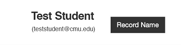
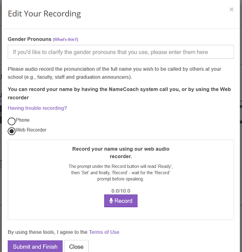
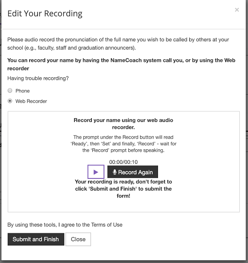
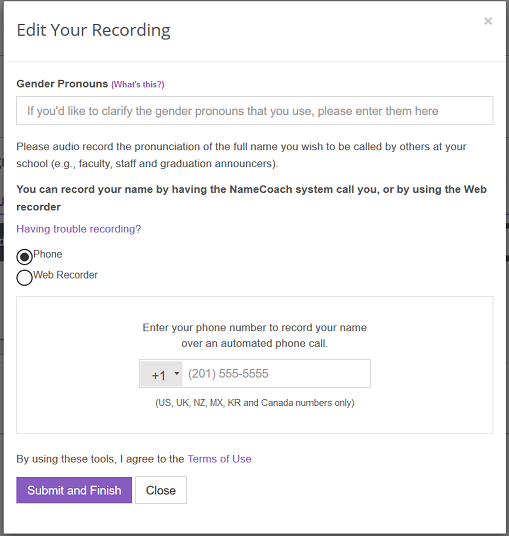
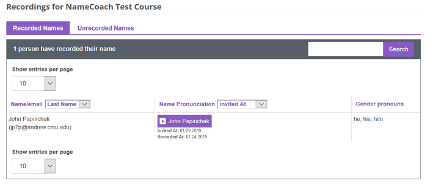

Instructions for Teachers:
Using NameCoach to properly pronounce your students’ names and use their preferred pronouns
NameCoach is a tool that is integrated into Canvas and S3 and is designed to support inclusive teaching practices. It allows you and your students to record and share the proper pronunciation of your names.
Note: Feb 7, 2019 is when the functionality to indicate preferred pronouns will be made available.
This how-to guide will help you:
Record the pronunciation of your name and enter your pronouns in NameCoach
When using NameCoach in Canvas, navigate to www.cmu.edu/canvas and log in.
- Enter your Canvas course and click on “NameCoach” (located in the course left navigation).
NOTE: If you don’t see NameCoach in your course left navigation, here’s how you can add it. - Within the NameCoach window, click on “Record Name.”
 - Select “Phone or Web Recorder” to record your name.

Web Recording:
- In the Gender Pronouns field, enter your preferred pronouns.
- Click the “Record” button and wait for the prompt before speaking.
- You can stop the recording, then click “Submit and Finish”.
- After you submit, you are able to hear your recording and re-record if you would like.

Phone Recording:
- In the Gender Pronouns field, enter your preferred pronouns.
- Enter your phone number in the box provided, then click “Submit and Finish.”
- NameCoach will call your phone and will prompt you with instructions. You will be able to listen to your recording and re-record if you wish.
- After you complete the call, go back to the NameCoach page in Canvas and click “Submit and Finish” to save your recording.
Listen to your students’ names and review their pronouns in NameCoach:
Once your students have recorded their names in NameCoach, you will see a list of their recordings. Each name will have a play button next to it so that you can hear the pronunciation.
Notice also, that you can see what students listed as their preferred pronouns.

Remember to check that NameCoach is available in your Canvas course left navigation so that students can access it directly from there to record their names and enter their preferred pronouns. You can easily make it available using these quick steps...